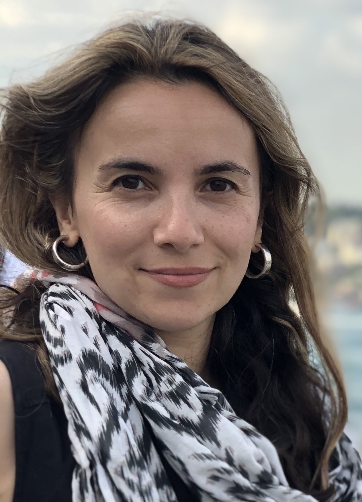

Biography
Selmin Kara is an Associate Professor of Film and New Media Studies at OCAD University in Toronto. In addition to her appointment in the Faculty of Liberal Arts and Sciences, Dr. Kara is an affiliated faculty member of the graduate programs CADN (Contemporary Art, Design and New Media Art Histories) and Digital Futures.
Her primary research interests are digital aesthetics and ecological sensibilities in cinema as well as the use of sound and new technologies in contemporary documentary. She is the co-editor of Contemporary Documentary and her work has also appeared in Post-Cinema: Theorizing 21st Century Film, The Oxford Handbook of Sound and Image in Digital Media, Sequence, Music and Sound in Nonfiction Film, The Philosophy of Documentary, and Studies in Documentary Film.
Research
Areas of research:
I. Eco-cinema
[Forthcoming] “The Anthropocene Project and the Archiviolithic Imaginary,” Screen.
[Forthcoming] “Weirding Climate Realism in Sunshine and Ex-Machina,” co-authored with Cydney Langill, special theme issue of Resilience: A Journal of the Environmental Humanities 7.1 on “Climate Realism.”
"Anthropocenema: Cinema in the Age of Mass Extinctions" in Post-Cinema: Theorizing 21st-Century Film, eds. Shane Denson and Julia Leyda. REFRAME: Open-Access and Multimedia Publishing in Media, Film and Music Studies, 2016: 750–785. (also online, April 2016).
II. Documentary Contemporary Documentary. Co-edited with Daniel Marcus. New York: Routledge, 2015.
“Sonic Ethnographies: Leviathan and New Materialisms in Documentary”, co-authored with Alanna Thain, in Music and Sound in Documentary Film, ed. Holly Rogers. New York: Taylor and Francis/Routledge, 2014: 180–192.
“The Sonic Summons: Meditations on Nature and Anempathetic Sound in Digital Documentaries,” in The Oxford Handbook of Sound and Image in Digital Media, eds. John Richardson, Amy Herzog, and Carol Vernallis. Oxford: Oxford University Press, 2013: 582–598.
"Reassembling the Nation: Iraq in Fragments and the Acoustics of Occupation," Studies in Documentary Film (Issue on Documentary Films after 9/11), 3. 3 (September 2009): 259–274.
III. Film-Philosophy
“Redefining Documentary Materialism: from Actuality to Virtuality in Victor Erice’s Dream of Light,” in The Philosophy of Documentary Film, ed. David LaRocca. Lanham, MA: Lexington Books, 2016: 343–361.
“Beasts of the Digital Wild: Primordigital Cinema and the Question of Origins,” Sequence: Serial Studies of Media, Film and Music 1. 4 (online, Summer 2014)
“The Perpetual Bachelorette: Seduction and Simulation in Michel Gondry’s Bjork Videos,” Co-authored with Carole Lyn Piechota, POIESIS: A Journal of the Arts & Communication (Issue on Jean Baudrillard) 10 (2008): 58–68.
IV. Media Art Activism
“Unruly Documentary Artivism,” special issue co-edited with Camilla Møhring Reestorff, Studies in Documentary Film 9. 1 (February 2015).
“Rebels Without Regret: Documentary Artivism in the Digital Age,” Studies in Documentary Film (Issue on Unruly Documentary Artivism), 9. 1 (February 2015): 42–54.
“Introduction: Unruly Documentary Artivism,” co-authored with Camilla Møhring Reestorff, Studies in Documentary Film (Issue on Unruly Documentary Artivism), 9. 1 (February 2015): 1–9.
V. Unrefereed Research: “Chasing Mass Extinctions,” guest writer for the scholarly documentary site Docalogue’s discussion on the film Chasing Ice (January 2018): https://docalogue.com/january-chasing-coral/
[Reprint] “Reassembling the Nation: Iraq in Fragments and the Acoustics of Occupation,” in Ten Years of Studies in Documentary Film, ed. Deane Williams. New York: Taylor and Francis/Routledge, 2018.
“Dijital Diyarın Canavarları: Dijital Sinemada Gerçekçilik ve Kökenlere Dönüş,” Tr. Ilker Mutlu. Sekans Sinema Kulturu Dergisi 11 (Sekans Cinema Culture Reader 11): http://openresearch.ocadu.ca/id/eprint/1272/1/Kara_Dijital_2016.pdf
Publications
Teaching
OCAD University, 2011–Present
Undergraduate Courses:
Graduate Courses/Seminars:
Students
Graduate Student Supervision:
Current:
Shahrzad Amin, Principal Advisor, Untitled MFA project, OCAD University
Completed (Principal Advisor):
Émilie Uzoma Jacob, MA MRP (Major Research Paper) in Contemporary Art, Design and New Media Art Histories: “Concrete Maternality: Late Capitalism and High-Rise Horror,” OCAD 2017
Cydney Patricia Seck Langill, MA Thesis in Contemporary Art, Design and New Media Art Histories: “Embodiment and the Digital Continuum: Post-Cinematic Diffractions in Ex Machina, Her, and Under the Skin,” OCAD 2016
Treva Michelle Pullen-Legassi, MA Thesis in Criticism and Curatorial Practice: “Whimsical Bodies: Agency and Playfulness in Robotic Art,” OCAD 2016
Michael Klaus Trommer, MFA MRP in Interdisciplinary Master’s in Art, Media and Design: “Situating Cinematic Space within an Acoustemological Framework,” OCAD 2015
Maziar Ghaderi, MDes MRP in Digital Futures: “Playformance: The Virtual Amplification of Spontaneous Hand Gestures in Performance Art,” OCAD 2014
Ali Bassidji, MA MRP in Contemporary Art, Design and New Media Art Histories: “A.N.T., Agency and Cinematic Authorship,” OCAD 2014
Completed (Committee Member):
Valentyna Onisko, MFA Thesis in Criticism and Curatorial Practice: “There is Bread and Salt Between Us: Negotiating Subjecthood Through Gestures of Hospitality,” OCAD 2017
Margarita Beatriz Castro, MDes MRP in Digital Futures: “Augmented Reality Technologies for the Adaptation of Ecuadorian Intangible Cultural Heritage,” OCAD 2017
Juan Francisco Bonilla, MFA MRP in Interdisciplinary Master’s in Art, Media and Design: “A Home Movie: Reluctant Autoethnography,” OCAD 2017
Alana Marie Traficante, MFA Thesis in Interdisciplinary Master’s in Art, Media and Design: “Sensing the Image: Embodied Art Criticism,” OCAD 2016
Completed (Internal Examiner):
Monica Virtue, MRP in Digital Futures: “The Ipperwash Beach Walk,” OCAD 2016
Umar Amanullah, MRP in Digital Futures: “#stopislamophobia: The Politics of Representation, Disidentification and Resistance,” OCAD 2015
Faraz Anoushah Pour, MRP in Interdisciplinary Master’s in Art, Media and Design: “In the Space of a Day,” OCAD 2014
Completed (External Examiner) Aaron Pellerin, PhD Dissertation in Film Studies: “Everyday Transcendence: Contemporary Art Film and the Return to Right Now,” Wayne State University 2019
Deniz Zorlu, PhD Dissertation in Cultural Studies: “Constructing Magnificence and Its Discontents: Analysis of the Series Magnificent Century,” Queens University 2017
Sample student work:
“Transmissions from the Technological Sublime” A video completed as part of Michael Trommer’s MFA project. Intended as a large-scale, panoramic audio-visual installation. Sound is disseminated via 6 regular channels (hexagonal array) + 1 subwoofer (center/front). Original video is 5760 x 1080 dpi, to be projected via 3 synchronized HD projectors. https://vimeo.com/123253559
“Whimsical Bodies and Performative Machines: Aesthetics and Affects of Robotic Art” A peer-reviewed article authored by Treva Pullen, based on ongoing research from her master’s thesis. https://www.degruyter.com/view/j/culture.2017.1.issue-1/culture-2017-0048/culture-2017-0048.xml?format=INT
“Dissolving Self: Wearable Technology + Contemporary Dance” A playformance piece that is part of Maziar Ghaderi’s Masters in Design research, Playformance. “Dissolving Self” employs metaphoric data visualization, motion capture and wearable technology to harness the subtle movements of a contemporary dancer. A gyroscope and a radio module (Xbee) worn by the dancer measure and transmit speed of rotation and a Microsoft Kinect captures lateral movement. These two sets of live data are fed into Processing, an open source software to create a responsive and metaphoric visualization that is projected over the dancer.
Still:
Video: https://vimeo.com/65470870
“Jadoo Banoo: Leap Motion X Poetry” A customized networked-performance that is part of Maziar Ghaderi’s Masters in Design research, Playformance. Ghaderi animated and projected the words of Jadoo Banoo’s poem on and across the stage. The disorderly path of the words was formed by the hand gestures captured over the Leap Motion and the font size was determined by the speed of the gestures. Jadoo Banoo uses the performer’s spontaneous movements as embodied acts of articulation to translate spoken poetry and explores how the performer spatially interacts with and within the virtual representation of her own poetic text. https://vimeo.com/92749306
Events
Invited talks and public presentations:
[Panelist] “Sonic Ethnography and the Ecotones of Dread,” The Penn Program in Environmental Humanities Symposium on “Geosocial Encounters: Ecologies of Documentary Research and Practice,” University of Pennsylvania, Philadelphia, September 20, 2019
[Guest presenter], “Close-Up,” Post-Revolution Iran Film Series, Noor Cultural Center, Toronto, July 27, 2019
[Guest speaker] “Film Screening and Panel: The Martian,” Science Literacy Week at the University of Toronto, Robarts Library, September 19, 2018
[Keynote speaker] “Anthropocene Cinema and Future Ecologies,” Future Ecologies: Speculative Form and Feeling, one day event organized by the Institute for Gender, Sexuality, and Feminist Studies, McGill University, February 23, 2018
[Invited speaker] Discussion #3 on the Exhibition “For All by All” curated by Agata Jaworska (The Dutch Pavilion), Thijs van Spaandonk and Gerjan Streng (BRIGHT Cloud Collective), Jorn Konijn (This Must Be The Place) and Saskia van Stein (Bureau Europa), EDIT: Festival for Design, Innovation, and Technology, Toronto, October 8, 2017
[Invited panelist] “Isaac Julien: Rethinking Space,” OCAD University in collaboration with Royal Ontario Museum (ROM) and Images Festival (IF), April 6, 2017
[Invited panelist] “Visualizing Decay,” Speaker series titled “(De)Composing Futures” organized by the Technoscience Salon, University of Toronto, January 13, 2017
[Keynote speaker] “Documenting the Post-Cinematic Present,” DokFest Forum 2016, Kassel, Germany, November 17, 2016
[Public Lecture] “Anthropocene Cinema,” University of Toronto, Cinema Studies Institute, May 27, 2016
[Public Lecture] “Anthropocene Cinema and the Eco-Sensory Breach,” The Office of Research and Graduate Studies, OCAD, April 6, 2016
[Invited panelist] “Aesthetic and Metabolic Rifts in Anthropocene Cinema,” Toronto Film and Media Seminar in collaboration with TIFF Learning Center, February 5, 2016
[Public Lecture] “Cinema in/of Anthropocene,” Speaker series titled “Anthropocene, Ecology, Pedagogy: The Future in Question”, University of Alberta, October 9, 2015 Video: https://www.youtube.com/watch?v=nkdyBd9G_xE
Events Organized:
1. Culture Shifts: Culture Shifts is a documentary screening series co-organized by Selmin Kara, Min Sook Lee, Richard Fung, and Ryan Rice. It presents documentary media as a catalyst for critical discussions and community action for social change.
2. ProprioMedia Colloquium Series: include some posters
“ProprioMedia Colloquium Series”, which ran between 2013–2016, was a speaker series organized by Selmin Kara and David McIntosh at OCAD University. Its goal was to establish a dialogue among scholars working in various fields related to or intersecting with media studies and research at OCAD University and select institutions in North America. The colloquia took place monthly and featured 2–3 speakers, delivering 25–30 minute presentations, followed by a Q&A. Meaning behind the title: “ProprioMedia” is a coined concept invoking the associations of the Latin term proprius—meaning “one’s own,” “proper,” or “individual,”—in the larger context of media theory and practice. Proprioception as a bodily basis for spatial and multi-sensory consciousness has been a source of rising interest in new media and film-related research in recent years but one can also think about the significance of proprietary thinking for understanding how various media practices relate to the self as well as the collective through the individual. It also refers to the “characteristic,” that is to say, the particular and the distinguishing, underscoring the series’ openness to innovative research that encompasses a wide range of topics.
3. Toronto Film and Media Seminar
Steering Committee for 2019–2020
Co-chairs: James Leo Cahill (UofT) and Claudia Sicondolfo (York)
• Faculty members: Michael Baker (Sheridan); Liz Clarke (Brock); Natalie Coulter (York); Brian Jacobson (UofT); Carolyn Kane (Ryerson); Selmin Kara (OCAD); Mark Lipton (Guelph); Susan Lord (Queen’s); Katherine Spring (WLU); Janine Marchessault (York)
• Grad student members: Lani Akande (York); Anjo-marí Guows (UofT); Heather Lambert (WLU); Katie Russell (UofT); Cyrus Sundar Singh (Ryerson); Émilie von Garan (UofT)
• Member at Large: Jesse Cumming (Independent Scholar/Curator); TIFF: Theresa Scandiffio, Jessica Lam, Keith Bennie.
Hosted by the 3rd Floor Learning Studios at the TIFF Bell Lightbox, the goals of the Toronto Film & Media Seminar are: • Encouraging intellectual and collegial discussion among the Cinema and Media Studies scholars in the region.
• Encouraging in-depth scholarly discussion and critical debate.
• Showcasing diverse research methodologies and research fields that address a wide range of cinematic technologies (film, television, video, new media, and other forms of moving image and sound screens).
• Aiming to model collegial and professional academic discourse for graduate students entering the field.